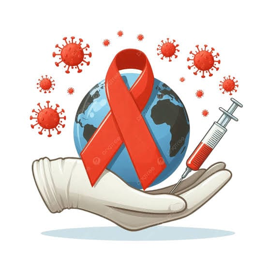

Infórmate, Previene y Actúa
Bienvenido a VIHDA. Una campaña educativa orientada a derribar mitos, promover la salud sexual responsable y frenar el estigma en el Perú y Cusco.
Cada 1 de diciembre se conmemora el Día Mundial del SIDA.

¿Qué es el VIH y el SIDA?
Es fundamental aprender la diferencia clave para entender la salud pública.
VIH y SIDA NO son lo mismo
El VIH es el Virus de la Inmunodeficiencia Humana, que ataca nuestras defensas. Una persona puede vivir con el virus muchos años sin presentar síntomas.
El SIDA es la etapa avanzada de la infección, cuando las defensas están muy debilitadas. Con diagnóstico oportuno y tratamiento, llegar a esta etapa es prevenible.

El VIH en Nuestro Contexto
Información clave sobre la situación actual.
Aprende en pocos minutos
Video explicativo sobre la transmisión, los síntomas y los mitos del virus.
¿Cómo se transmite el VIH realmente?
El virus solo puede transmitirse a través de tres vías específicas:
1. Vía sexual: relaciones sexuales (vaginales, anales u orales) sin el uso correcto del preservativo.
2. Vía sanguínea: por compartir agujas o jeringas, o por contacto directo con sangre infectada.
3. Vía materno-infantil: de una madre que vive con el virus a su bebé durante el embarazo, el parto o la lactancia. Con tratamiento y control médico, es altamente prevenible.

¿Cómo actúa el virus en el organismo?
El virus entra en las células de defensa del cuerpo para multiplicarse. Sin control médico, debilita el organismo de forma progresiva. Los tratamientos actuales detienen la multiplicación del virus y permiten que las defensas se recuperen.
¿Dónde pedir ayuda o hacerte la prueba?
- Infosalud (MINSA): llama al 113, gratuito, para orientación y ubicar tu establecimiento de salud más cercano.
- En Cusco: acude a tu centro de salud o a hospitales como el Hospital Regional del Cusco o el Hospital Antonio Lorena, y pregunta por el servicio de ITS/VIH (consejería y prueba).
- DIRESA Cusco: puede indicarte el establecimiento con atención de VIH más cercano a tu distrito.
Confirma horarios y servicios disponibles antes de ir.